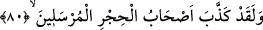

dinar alıp gemiye, bir dinar alıp denize atmaya başladı. Nihâyet dinarları yarı yarıya
azalttı.”[85]
Bir hadiste buyrulur ki: “Emânet zâyi edildiği zaman kıyâmetin kopmasını
bekle.”[86] Başka bir hadiste ise: “İnsanlar üzerine öyle bir zaman gelecek ki bir
kimse malı helâlden mi haramdan mı elde ettiğine aldırmayacak!”[87]
Ey âdemoğlu, gözün haramda, dilin günahta, bedenin dünyâlık kazanmak için
yoruluyor. Ey miskin, uyan! Sen gafletteyken ömrün geçip gidiyor. Kurtulacağına dâir
delil hani nerede?!
Orta yolu tut, peşine düşme çoğaltma işinin
En üstünüdür orta yol talep ettiğin şeylerin
Sevinir, dünyâ ve güzellikleriyle kişi
Düşünmez, nereye varacak sonunda işi
Nihâyet kaybedince tüm bu güzellikleri
Aldandığı ortaya çıkıp artar dertleri
Sa’dî (k.s.) da şöyle der:
Ey nefis, aza kanâat et
Ki sultan ve dervişi bir görürsün
Şehvetperest nefse itâat etme
Ki o her sâat başka bir kıblededir
80. Andolsun, Hicr halkı da peygamberleri yalanlamıştı.
Hicr, Sâlih (a.s.)’ın kavmi olan Semûd ülkesinin adıdır. Medine ile Şam arasında
Vâdi’l-kurâ yakınındadır. Semûd kavmi burada yaşardı. Bunlar, Araptılar. Sâlih (a.s.)
nesebce onların en üstün olanlarındandı. Allah da bu sebeple onu daha genç yaştayken
kavmine peygamber kıldı. Saçı sakalı ağarana kadar onlara dâvette bulundu. Az
sayıdaki güçsüz sayılan kimselerden başkası ona tâbi olmadı.
Tevfîk ve selâmet topunu ortaya bırakmışlar,
Bir kimse meydana gelmiyor, süvârilere ne oldu?
“Andolsun, Hicr halkı da” yâni Semûd kavmi de “peygamberleri” Sâlih (a.s.)’ı
“yalanlamıştı.” Çünkü bir peygamberi yalanlayan bütün peygamberleri yalanlamış
demektir. Zira tüm peygamberler, tevhîd ile ümmetlerin ve çağların değişimiyle
değişmeyen usûl/asıl kurallar konusunda müttefiktirler. Bu ifâdenin bir benzeri ‘Falanca